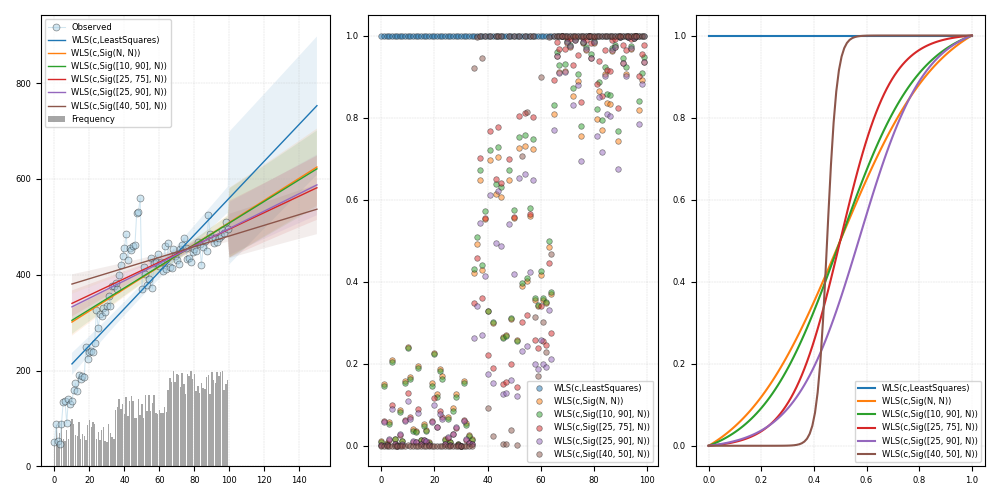

Note
Click here to download the full example code
WLS search¶
Out:
c:\users\kelda\desktop\repositories\virtualenvs\venvpy39-datablend\lib\site-packages\statsmodels\regression\linear_model.py:764: RuntimeWarning: divide by zero encountered in log
llf += 0.5 * np.sum(np.log(self.weights))
c:\users\kelda\desktop\repositories\virtualenvs\venvpy39-datablend\lib\site-packages\statsmodels\regression\linear_model.py:764: RuntimeWarning: divide by zero encountered in log
llf += 0.5 * np.sum(np.log(self.weights))
c:\users\kelda\desktop\repositories\virtualenvs\venvpy39-datablend\lib\site-packages\statsmodels\regression\linear_model.py:764: RuntimeWarning: divide by zero encountered in log
llf += 0.5 * np.sum(np.log(self.weights))
c:\users\kelda\desktop\repositories\virtualenvs\venvpy39-datablend\lib\site-packages\statsmodels\regression\linear_model.py:764: RuntimeWarning: divide by zero encountered in log
llf += 0.5 * np.sum(np.log(self.weights))
c:\users\kelda\desktop\repositories\virtualenvs\venvpy39-datablend\lib\site-packages\statsmodels\regression\linear_model.py:764: RuntimeWarning: divide by zero encountered in log
llf += 0.5 * np.sum(np.log(self.weights))
Grid search:
0 1 2 3 4 5
wls-rsquared 0.732 0.4949 0.4667 0.3806 0.3991 0.2278
wls-rsquare... 0.7293 0.4897 0.4613 0.3743 0.393 0.2199
wls-fvalue 267.6905 96.0208 85.7786 60.2186 65.1002 28.9069
wls-fprob 0.0 0.0 0.0 0.0 0.0 0.0
wls-aic 1134.2196 inf inf inf inf inf
wls-bic 1139.4299 inf inf inf inf inf
wls-llf -565.1098 -inf -inf -inf -inf -inf
wls-mse_model 1295429.6698 143594.3272 124629.9754 69255.6291 65703.6316 17142.1318
wls-mse_resid 4839.2812 1495.45 1452.9262 1150.0699 1009.2697 593.0118
wls-mse_total 17875.5478 2930.7922 2697.1388 1838.0048 1662.7481 760.1746
wls-const_coef 169.5272 276.6554 287.6331 322.5571 317.5441 385.392
wls-const_std 13.8093 17.1238 17.0683 16.3578 16.4867 12.6318
wls-const_t... 12.2763 16.1562 16.8519 19.7189 19.2606 30.5097
wls-const_t... 0.0 0.0 0.0 0.0 0.0 0.0
wls-const_cil 142.1231 242.6738 253.7617 290.0956 284.8268 360.3246
wls-const_ciu 196.9313 310.637 321.5046 355.0186 350.2614 410.4594
wls-x1_coef 3.9429 2.3672 2.2252 1.7664 1.8236 0.9415
wls-x1_std 0.241 0.2416 0.2403 0.2276 0.226 0.1751
wls-x1_tvalue 16.3613 9.799 9.2617 7.7601 8.0685 5.3765
wls-x1_tprob 0.0 0.0 0.0 0.0 0.0 0.0
wls-x1_cil 3.4647 1.8878 1.7484 1.3147 1.3751 0.594
wls-x1_ciu 4.4212 2.8466 2.702 2.2181 2.2721 1.289
wls-s_dw Jarque-Ber... Jarque-Ber... Jarque-Ber... Jarque-Ber... Jarque-Ber... Jarque-Ber...
wls-s_jb_value Prob(JB): Prob(JB): Prob(JB): Prob(JB): Prob(JB): Prob(JB):
wls-s_jb_prob Cond. No. Cond. No. Cond. No. Cond. No. Cond. No. Cond. No.
wls-s_skew Kurtosis: Kurtosis: Kurtosis: Kurtosis: Kurtosis: Kurtosis:
wls-s_kurtosis
wls-s_omnib... Prob(Omnib... Prob(Omnib... Prob(Omnib... Prob(Omnib... Prob(Omnib... Prob(Omnib...
wls-s_omnib... Skew: Skew: Skew: Skew: Skew: Skew:
wls-m_dw 0.1611 0.1005 0.0929 0.072 0.0747 0.0465
wls-m_jb_value 2.3052 12.1641 14.11 18.7492 18.3216 20.9372
wls-m_jb_prob 0.3158 0.0023 0.0009 0.0001 0.0001 0.0
wls-m_skew 0.3639 -0.8141 -0.8837 -1.0376 -1.0238 -1.1161
wls-m_kurtosis 2.8468 3.5182 3.5126 3.4394 3.4521 3.2061
wls-m_nm_value 2.3787 11.7258 13.1579 16.2181 15.9602 17.1984
wls-m_nm_prob 0.3044 0.0028 0.0014 0.0003 0.0003 0.0002
wls-m_ks_value 0.528 0.5849 0.6134 0.6297 0.6299 0.6493
wls-m_ks_prob 0.0 0.0 0.0 0.0 0.0 0.0
wls-m_shp_v... 0.9774 0.9258 0.9159 0.8867 0.8898 0.8586
wls-m_shp_prob 0.0829 0.0 0.0 0.0 0.0 0.0
wls-m_ad_value 0.8113 3.1567 3.5945 4.8645 4.731 5.8346
wls-m_ad_nnorm False False False False False False
wls-exog [[1.0, 0.0... [[1.0, 0.0... [[1.0, 0.0... [[1.0, 0.0... [[1.0, 0.0... [[1.0, 0.0...
wls-endog [19.649418... [19.649418... [19.649418... [19.649418... [19.649418... [19.649418...
wls-trend c c c c c c
wls-weights [1.0, 1.0,... [0.0203446... [0.0153046... [0.0052187... [0.0060789... [4.4929139...
wls-W <statsmode... <pyamr.met... <pyamr.met... <pyamr.met... <pyamr.met... <pyamr.met...
wls-model <statsmode... <statsmode... <statsmode... <statsmode... <statsmode... <statsmode...
wls-id WLS(c,Leas... WLS(c,Sig(... WLS(c,Sig(... WLS(c,Sig(... WLS(c,Sig(... WLS(c,Sig(...
8 9 10 11 12 13 14 15 16 17 18 19 20 21 22 23 24 25 26 27 28 29 30 31 32 33 34 35 36 37 38 39 40 41 42 43 44 45 46 47 48 49 50 51 52 53 54 55 56 57 58 59 60 61 62 63 64 65 66 67 68 69 70 71 72 73 74 75 76 77 78 79 80 81 82 83 84 85 86 87 88 89 90 91 92 93 94 95 96 97 98 99 100 101 102 103 104 105 106 107 108 109 110 111 112 113 114 115 116 117 118 119 120 121 122 123 124 125 126 127 128 129 130 131 132 133 134 135 136 137 138 139 140 141 | # Import class.
import sys
import numpy as np
import pandas as pd
import matplotlib as mpl
import matplotlib.pyplot as plt
import statsmodels.api as sm
import statsmodels.robust.norms as norms
# import weights.
from pyamr.datasets.load import make_timeseries
from pyamr.core.regression.wls import WLSWrapper
from pyamr.metrics.weights import SigmoidA
# ----------------------------
# set basic configuration
# ----------------------------
# Matplotlib options
mpl.rc('legend', fontsize=6)
mpl.rc('xtick', labelsize=6)
mpl.rc('ytick', labelsize=6)
# Set pandas configuration.
pd.set_option('display.max_colwidth', 14)
pd.set_option('display.width', 150)
pd.set_option('display.precision', 4)
# ----------------------------
# create data
# ----------------------------
# Create timeseries data
x, y, f = make_timeseries()
# -----------------------------
# Example II
# -----------------------------
# This example performs grid search on a number of possible configurations
# of the WLSWrapper. In particular, it tests the effect of different
# objects to compute the weights from the frequencies. It presents both
# the resulting pandas dataframe and also a figure.
# Configuration
# -------------
# This variable contains the weight functions to test. Note that in
# the norms module there are other options such as [norms.HuberT(),
# norms.Hampel(), norms.TrimmedMean(), norms.TukeyBiweight(),
# norms.AndreWave(), norms.RamsayE()]
w_func = [
norms.LeastSquares(),
SigmoidA(r=200, g=0.5, offset=0.0, scale=1.0),
SigmoidA(r=200, g=0.5, offset=0.0, scale=1.0, percentiles=[10, 90]),
SigmoidA(r=200, g=0.5, offset=0.0, scale=1.0, percentiles=[25, 75]),
SigmoidA(r=200, g=0.5, offset=0.0, scale=1.0, percentiles=[25, 90]),
SigmoidA(r=200, g=0.5, offset=0.0, scale=1.0, percentiles=[40, 50])]
# The grid search parameters.
grid_params = [
# {'exog': [x], 'endog': [y], 'trend': ['c']},
{'exog': [x], 'endog': [y], 'trend': ['c'], 'weights': [f], 'W': w_func}
]
# Grid search
# ------------
# Perform grid search.
summary = WLSWrapper(estimator=sm.WLS) \
.grid_search(grid_params=grid_params)
# Show grid results
# ..todo: It is weird to create an WLSWrapper jut to
# be able to use themethod from_list_dataframe.
# try to implemented separately.
print("\nGrid search:")
print(WLSWrapper().from_list_dataframe(summary).T)
# Prediction
# ----------
# Variables.
start, end = 10, 150
# Create figure
fig, axes = plt.subplots(1, 3, figsize=(10, 5))
# Plot truth values.
axes[0].plot(x, y, color='#A6CEE3', alpha=0.5, marker='o',
markeredgecolor='k', markeredgewidth=0.5,
markersize=5, linewidth=0.75, label='Observed')
# Plot frequencies
axes[0].bar(x, f, color='gray', alpha=0.7, label='Frequency')
# For each of the models in summary
for i, model in enumerate(summary):
# Compute predictions.
preds = model.get_prediction(start=start, end=end)
# Plot forecasted values.
axes[0].plot(preds[0, :], preds[1, :],
linewidth=1.0,
label=model._identifier(short=True))
# Plot the confidence intervals.
axes[0].fill_between(preds[0, :],
preds[2, :],
preds[3, :],
alpha=0.1)
# Plot weights assigned to each observation
axes[1].plot(model.weights, marker='o', alpha=0.5,
markeredgecolor='k', markeredgewidth=0.5,
markersize=4, linewidth=0.00,
label=model._identifier(short=True))
# Plot weights converter (W) functions.
if model.W is not None:
axes[2].plot(np.linspace(0, 1, 100),
model.W.weights(np.linspace(0, 1, 100)),
label=model._identifier(short=True))
# Grid.
axes[0].grid(linestyle='--', linewidth=0.35, alpha=0.5)
axes[1].grid(linestyle='--', linewidth=0.35, alpha=0.5)
axes[2].grid(linestyle='--', linewidth=0.35, alpha=0.5)
# Legend.
axes[0].legend(loc=0)
axes[1].legend(loc=0)
axes[2].legend(loc=0)
# Tight layout
plt.tight_layout()
# Show.
plt.show()
|
Total running time of the script: ( 0 minutes 0.479 seconds)